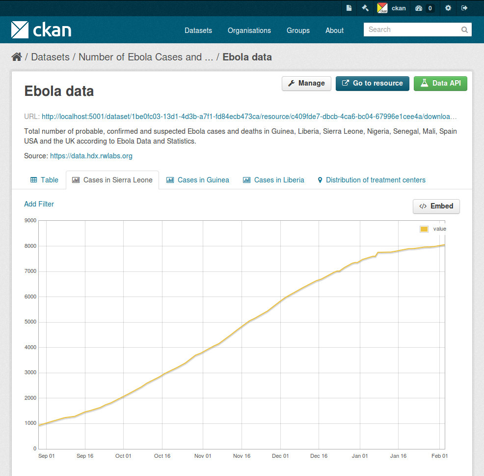
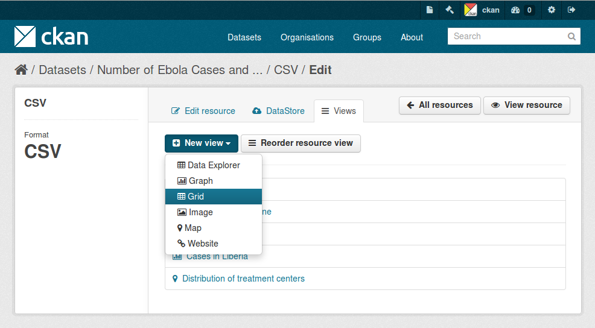
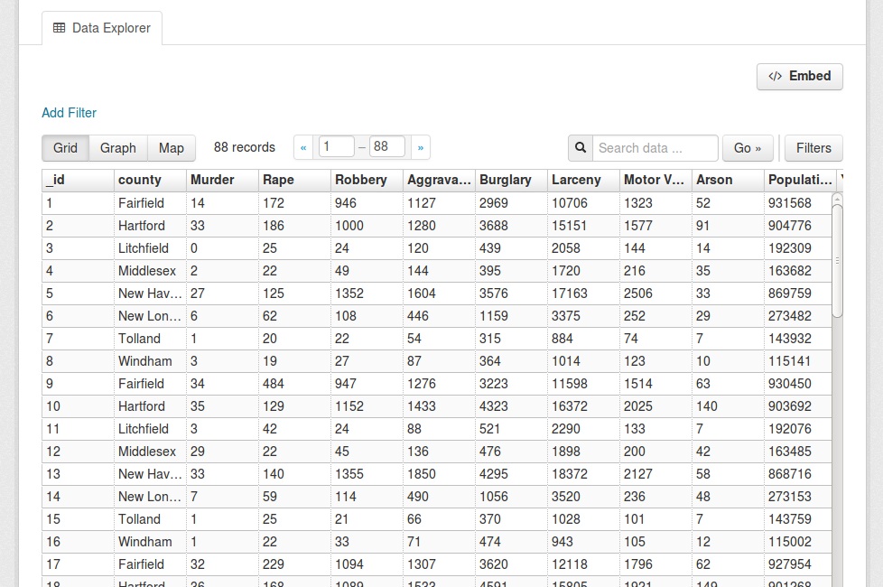
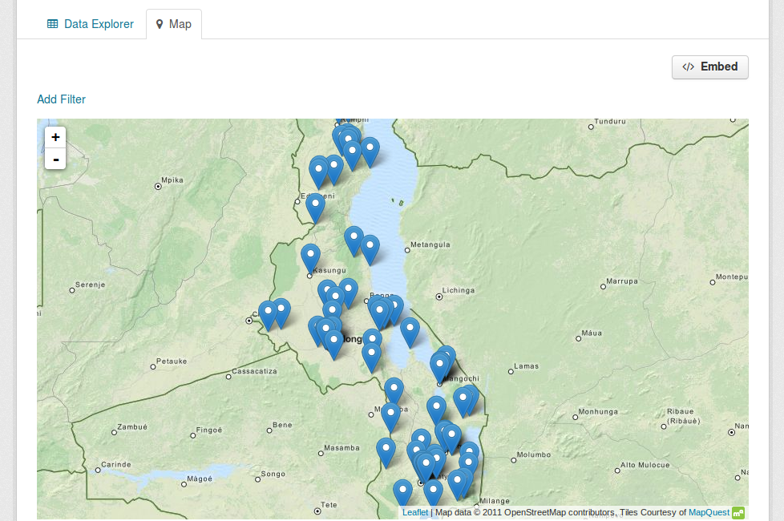
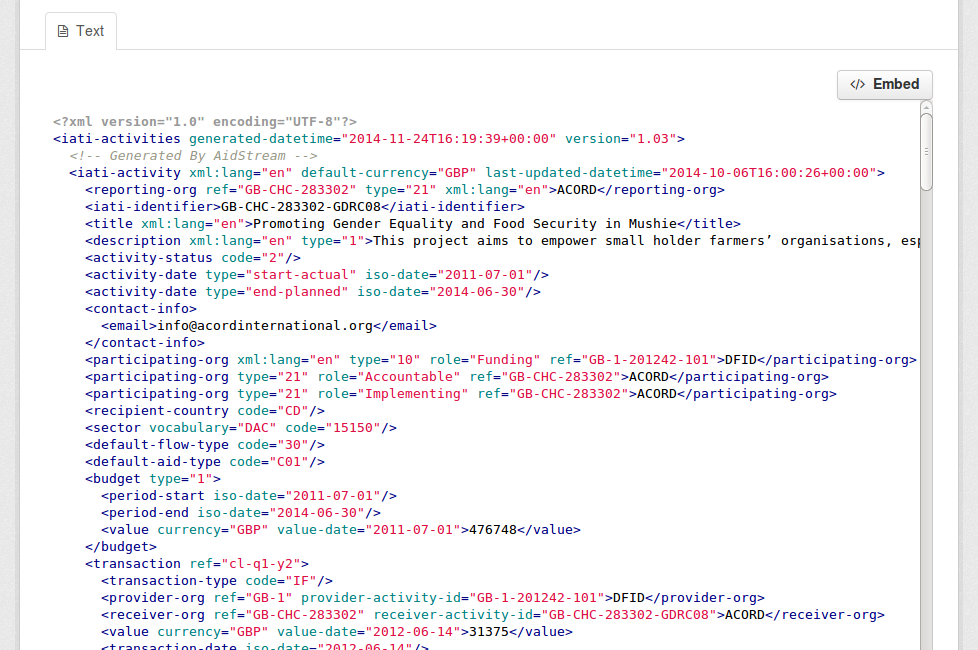
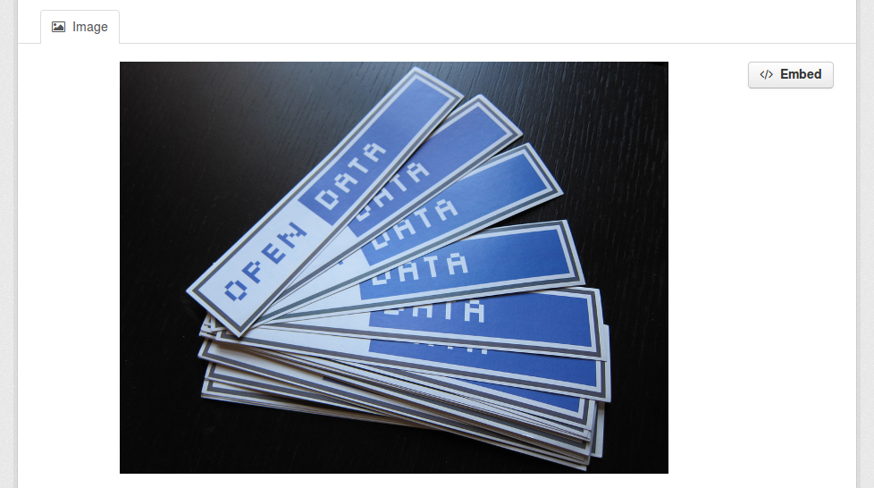

Data preview and visualization¶
Changed in version 2.3: The whole way resource previews are handled was changed on CKAN 2.3. Please refer to previous versions of the documentation if you are using an older CKAN version.
Contents
Overview¶
The CKAN resource page can contain one or more visualizations of the resource data or file contents (a table, a bar chart, a map, etc). These are commonly referred to as resource views.
The main features of resource views are:
- One resource can have multiple views of the same data (for example a grid and some graphs for tabular data).
- Dataset editors can choose which views to show, reorder them and configure them individually.
- Individual views can be embedded on external sites.
Different view types are implemented via custom plugins, which can be activated on a particular CKAN site. Once these plugins are added, instance administrators can decide which views should be created by default if the resource is suitable (for instance a table on resources uploaded to the DataStore, a map for spatial data, etc.).
Whether a particular resource can be rendered by the different view plugins is decided by the view plugins themselves. This is generally done checking the resource format or whether its data is on the DataStore extension or not.
Managing resource views¶
Users who are allowed to edit a particular dataset can also manage the views for its resources. To access the management interface, click on the Manage button on the resource page and then on the Views tab. From here you can create new views, update or delete existing ones and reorder them.
The New view dropdown will show the available view types for this particular resource. If the list is empty, you may need to add the relevant view plugins to the ckan.plugins setting on your configuration file, eg:
ckan.plugins = ... image_view recline_view pdf_view
Defining views to appear by default¶
From the management interface you can create and edit views manually, but in most cases you will want views to be created automatically on certain resource types, so data can be visualized straight away after uploading or linking to a file.
To do so, you define a set of view plugins that should be checked whenever a dataset or resource is created or updated. For each of them, if the resource is a suitable one, a view will be created.
This is configured with the ckan.views.default_views setting. In it you define the view plugins that you want to be created as default:
ckan.views.default_views = recline_view pdf_view geojson_view
This configuration does not mean that each new resource will get all of these views by default, but that for instance if the uploaded file is a PDF file, a PDF viewer will be created automatically and so on.
Available view plugins¶
Some view plugins for common formats are included in the main CKAN repository. These don’t require further setup and can be directly added to the ckan.plugins setting.
Data Explorer¶
View plugin: recline_view
Adds a rich widget, based on the Recline Javascript library. It allows querying, filtering, graphing and mapping data. The Data Explorer is optimized for displaying structured data hosted on the DataStore extension.
The Data Explorer can also display certain formats of tabular data (CSV and Excel files) without its contents being uploaded to the DataStore. This is done via the DataProxy, an external service that will parse the contents of the file and return a response that the view widget understands. However, as the resource must be downloaded by the DataProxy service and parsed before it is viewed, this option is slower and less reliable than viewing data that is in the DataStore. It also does not properly support different encodings, proper field type detection, etc so users are strongly encouraged to host data on the DataStore instead.
Note
Support for the DataProxy will be dropped on future CKAN releases
The three main panes of the Data Explorer are also available as separate views.
DataStore Grid¶

View plugin: recline_grid_view
Displays a filterable, sortable, table view of structured data.
This plugin requires data to be in the DataStore.
DataStore Graph¶

View plugin: recline_graph_view
Allows to create graphs from data stored on the DataStore. You can choose the graph type (such as lines, bars, columns, etc) and restrict the displayed data, by filtering by a certain field value or defining an offset and the number of rows.
This plugin requires data to be in the DataStore.
DataStore Map¶
View plugin: recline_map_view
Shows data stored on the DataStore in an interactive map. It supports plotting markers from a pair of latitude / longitude fields or from a field containing a GeoJSON representation of the geometries. The configuration also allows to cluster markers if there is a high density of them and to zoom automatically to the rendered features.
This plugin requires data to be in the DataStore.
There is partial support to change the map tiles to a different service, such as Mapbox. Look below for an example to add to your configuration file:
#Mapbox example:
ckanext.spatial.common_map.type = mapbox
ckanext.spatial.common_map.mapbox.map_id = <id>
ckanext.spatial.common_map.mapbox.access_token = <token>
ckanext.spatial.common_map.attribution=© <a target=_blank href='https://www.mapbox.com/map-feedback/'>Mapbox</a> © <a target=_blank href='http://www.openstreetmap.org/copyright'>OpenStreetMap</a>
ckanext.spatial.common_map.subdomains = <subdomains>
#Custom example:
ckanext.spatial.common_map.type = custom
ckanext.spatial.common_map.custom.url = <url>
ckanext.spatial.common_map.custom.tms = <tms>
ckanext.spatial.common_map.attribution = <copyright link>
ckanext.spatial.common_map.subdomains = <subdomains>
Text view¶
View plugin: text_view
Displays files in XML, JSON or plain text based formats with the syntax highlighted. The formats detected can be configured using the ckan.preview.xml_formats, ckan.preview.json_formats and ckan.preview.text_formats configuration options respectively.
If you want to display files that are hosted in a different server from your CKAN instance (eg that haven’t been uploaded to CKAN) you will need to enable the Resource Proxy plugin.
Image view¶
View plugin: image_view
If the resource format is a common image format like PNG, JPEG or GIF, it adds an <img> tag pointing to the resource URL. You can provide an alternative URL on the edit view form.
Web page view¶

View plugin: webpage_view
Adds an <iframe> tag to embed the resource URL. You can provide an alternative URL on the edit view form.
Warning
Do not activate this plugin unless you trust the URL sources. It is not recommended to enable this view type on instances where all users can create datasets.
Other view plugins¶
There are many more view plugins developed by the CKAN team and others which are hosted on separate repositories. Some examples include:
- Dashboard: Allows to combine multiple views into a single dashboard.
- PDF viewer: Allows to render PDF files on the resource page.
- GeoJSON map: Renders GeoJSON files on an interactive map.
- Choropleth map: Displays data on the DataStore on a choropleth map.
- Basic charts: Provides alternative graph types and renderings.
If you want to add another view type to this list, edit this file by sending a pull request on GitHub.
New plugins to render custom view types can be implemented using the IResourceView interface.
Todo
Link to a proper tutorial for writing custom views
Resource Proxy¶
As resource views are rendered on the browser, if the file they are accessing is located in a different domain than the one CKAN is hosted, the browser will block access to it because of the same-origin policy. For instance, files hosted on www.example.com won’t be able to be accessed from the browser if CKAN is hosted on data.catalog.com.
To allow view plugins access to external files you need to activate the resource_proxy plugin on your configuration file:
ckan.plugins = resource_proxy ...
This will request the file on the server side and serve it from the same domain as CKAN.
You can modify the maximum allowed size for proxied files using the ckan.resource_proxy.max_file_size configuration setting.
Migrating from previous CKAN versions¶
If you are upgrading an existing instance running CKAN version 2.2.x or lower to CKAN 2.3 or higher, you need to perform a migration process in order for the resource views to appear. If the migration does not take place, resource views will only appear when creating or updating datasets or resources, but not on existing ones.
The migration process involves creating the necessary view objects in the database, which can be done using the paster views create command.
Note
The paster views create command uses the search API to get all necessary datasets and resources, so make sure your search index is up to date before starting the migration process.
The way the paster views create commands works is getting all or a subset of the instance datasets from the search index, and for each of them checking against a list of view plugins if it is necessary to create a view object. This gets determined by each of the individual view plugins depending on the dataset’s resources fields.
Before each run, you will be prompted with the number of datasets affected and asked if you want to continue (unless you pass the -y option):
You are about to check 3336 datasets for the following view plugins: ['image_view', 'recline_view', 'text_view']
Do you want to continue? [Y/n]
Note
On large CKAN instances the migration process can take a significant time if using the default options. It is worth planning in advance and split the process using the search parameters to only check relevant datasets. The following documentation provides guidance on how to do this.
If no view types are provided, the default ones are used (check Defining views to appear by default to see how these are defined):
paster views create
Specific view types can be also provided:
paster views create image_view recline_view pdf_view
For certain view types (the ones with plugins included in the main CKAN core), default filters are applied to the search to only get relevant resources. For instance if image_view is defined, filters are added to the search to only get datasets with resources that have image formats (png, jpg, etc).
You can also provide arbitrary search parameters like the ones supported by package_search(). This can be useful for instance to only include datasets with resources of a certain format:
paster views create geojson_view -s '{"fq": "res_format:GEOJSON"}'
To instead avoid certain formats you can do:
paster views create -s '{"fq": "-res_format:HTML"}'
Of course this is not limited to resource formats, you can filter out or in using any field, as in a normal dataset search:
paster views create -s '{"q": "groups:visualization-examples"}'
Tip
If you set the ckan_logger level to DEBUG on your configuration file you can see the full search parameters being sent to Solr.
For convenience, there is also an option to create views on a particular dataset or datasets:
paster views create -d dataset_id
paster views create -d dataset_name -d dataset_name
Command line interface¶
The paster views command allows to create and remove resource views objects from the database in bulk.
Check the command help for the full options:
paster views create -h
Todo
Tutorial for writing custom view types.